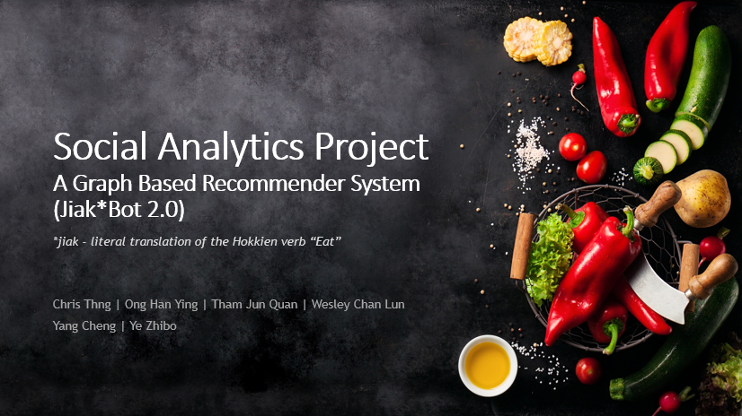

For ISSS 603 - Customers Analytics and Application
|
Objective of Web Portal:
Description:
This is where we document and showcase the analytical works for the group project as a proof of concept.
Navigation:
Proof-of-Concept: Presentation slide that cover the brief of the project.
|
|---|